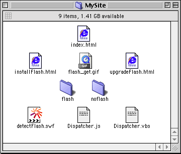

Place the following HTML pages to place on a Web server: an entry page, an install page, and an upgrade page.
You also need to place the Macromedia Flash Dispatcher files (detectFlash.swf, Dispatcher.js, and Dispatcher.vbs) on the server. The Dispatcher files should go in the same directory as the entry page.
You must place the Flash content and any alternate non-Flash content on the Web server as well. These files must be in the location you indicated in the
contentURL and altURL parameters of the MM_FlashDispatch function.
The hierarchy of files on the Web server
 |
 |